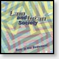
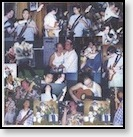
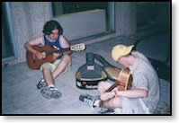
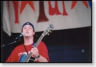
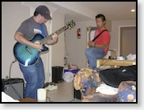
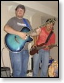
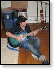
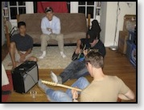

Music
Over the years I’ve recorded some music, both solo and with close friends.Spring (2013-Current)
Hallelujah [5:54]
First day of my life [3:16]
You and I [2:23]
 San Francisco Recordings (2011)
San Francisco Recordings (2011)Society [3:34]
 New Stuff (2006)
New Stuff (2006)Winter [4:04]
Sunshine [1:42]
 Walk the walk (2004)
Walk the walk (2004)Sassy Sally [3:44]
Classical Beats [1:28]
Celtic Crazyness [1:28]
 Done Exams EP (2004)
Done Exams EP (2004)Vindicated [3:23]
Out Loud [3:27]
Campus Pizza [7:04]
Rockin at Ry-U (2003)
{kind=link}
Tension tamer [5:28] Shirts and gloves [3:03] I’ll back you up [4:08]
Great Brit [5:03] Gone [2:16] Flake [4:41] Firealarm [4:18] Blackbird [2:22] Acoustic Frenzy Jam [2:39]
{kind=link}

Lam and Jutan Society - Busy in the Basement (2002)with Andrew Lam on Bass Guitar and featuring Bizz Varty on vocals
Without you [3:48] What I Got [4:08] Summer Love [3:46] Santeria [3:26] Long Nights [3:47] Jolt and Tylenol [4:50] Intergalactic [3:28] Hands Down [3:16] Goodbye [2:37] F#’in Crazy Bass Jam [2:38] Crash Into Me [5:27] Closing [3:03]
Jam Session!
Some pics of me jammin’ some sweet tunes with good friends over the years.{kind=link}

{kind=link}

{kind=link}

{kind=link}

{kind=link}

{kind=link}

{kind=link}

Musical Inspiration
Some of the bands I love:Dave Matthews Band, Ben Folds, Dispatch, Jack Johnson, Green Day, Joshua Radin, Coldplay, Elliott Smith, Jeremy Fisher, Joe Purdy, Sigur Ros, Simon & Garfunkel, Cat Stevens, Xavier Rudd, Yellowcard, Counting Crows, Ray LaMontagne, Mumford & Sons